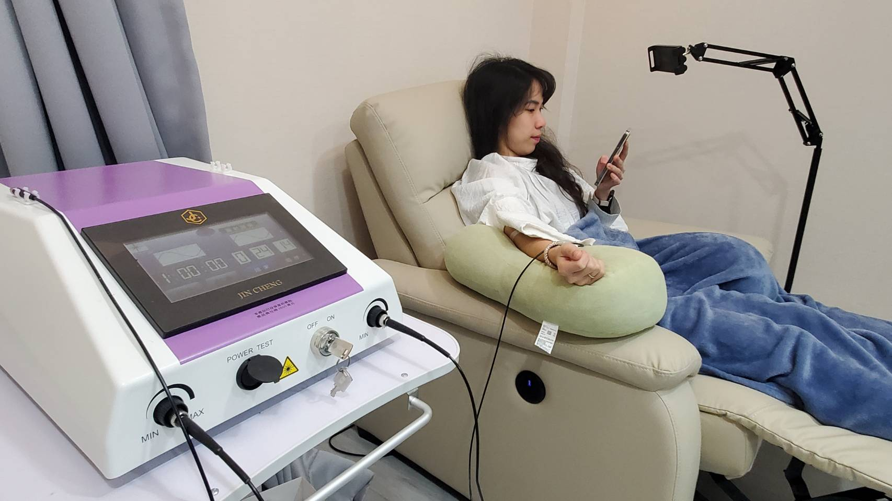
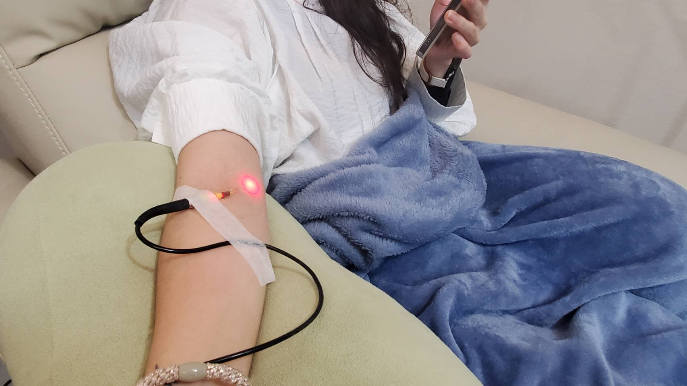

ILIB靜脈雷射 讓職場女性維持精神與活力

30歲的李小姐，職業生涯充滿挑戰，經常需要四處奔波、出差詢店。繁忙的工作節奏讓她的身體逐漸感到疲憊，而家族遺傳的免疫系統疾病更讓她擔心自己的健康狀況。為了提升身體防禦力、改善疲勞問題，她選擇嘗試 ILIB靜脈雷射 療程。
ILIB靜脈雷射：讓健康從根本提升

ILIB靜脈雷射是透過雷射光作用於血液，幫助促進新陳代謝、提升免疫力，並改善疲勞與睡眠品質。對於像李小姐面臨工作高壓、體力消耗大的職場女性，這是一種有效的健康管理與保養方式。
李小姐的親身感受
在ILIB靜脈雷射施打後，李小姐說，當天晚上比較好入睡，之前因為壓力關係，時常翻來覆去、輾轉難眠。精神狀態變佳，即使面對連續幾天的出差行程，仍能保持專注力與體力，長期疲憊感減輕，不再每天拖著沉重的步伐開始一天的工作。
她更強調：「以前每天晚上都覺得精力透支，早上醒來還是覺得累。但自從接受ILIB療程後，精神變得比較穩定，雖然工作依舊繁忙，但身體狀況真的有感變好！」
ILIB靜脈雷射
ILIB靜脈雷射的過程類似點滴注射，精細的雷射紅光經由軟針導入靜脈血管，
紅光能量透過與血液作用，直接幫血液做日光浴，助於促進身體新陳代謝、提升身體機能，並為身體帶來更好的調節效果。作為一種輔助治療與預防保健技術，ILIB適合需要長時間保持精力充沛與專注力的職場女性。